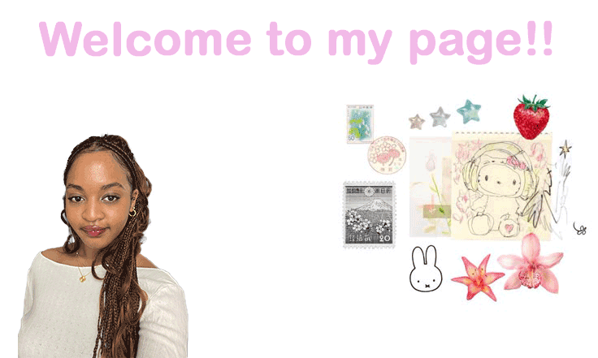

Ramatu's Biography
Hello, my name is Ramatu Ibrahim, and my major is Information Management and Technology with a concentration in cybersecurity. I’m studying this major because of my interest in the ways technology can be used to support businesses and enhance operations. Some of my notable accomplishments include winning the best project for the NEXIS data science team in spring 2025 and creating an NYC home finder program using python to help support users looking for homes in New York for a class project.
Personal Information
Aside from academic related interests/accomplishments, I enjoy reading, playing video games, and collecting trinkets!
Favorite Artists
- The Marias
- Le sserafim
- Pink Panthress
- Sabrina Carpenter